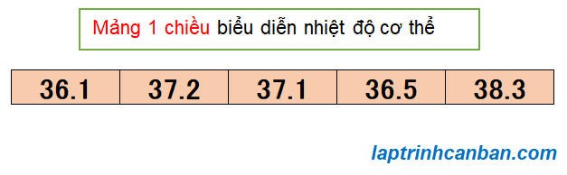
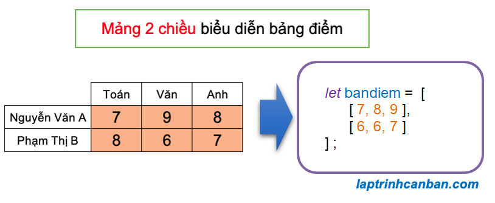

Bạn có đang sử dụng mảng trong JavaScript không? Mảng trong JavaScript, hay còn gọi là kiểu mảng trong JavaScript rất tiện lợi khi chúng ta cần xử lý một lượng lớn dữ liệu. Hãy cùng tìm hiểu mảng trong JavaScript là gì cũng như hai loại mảng là mảng 1 chiều và mảng đa chiều trong JavaScript sau bài học này.
Mảng trong JavaScript là gì
Mảng trong JavaScript, hay còn gọi là kiểu mảng trong JavaScript là tập hợp các dữ liệu có cùng mối liên quan, và các dữ liệu chứa trong mảng được gọi là phần tử của mảng đó.
Mảng trong JavaScript dùng để lưu trữ các dữ liệu có cùng một mối liên quan. Ví dụ, các dữ liệu như tên, tuổi, địa chỉ v.v.. đều cùng liên quan tới 1 người nào đó, và chúng ta có thể dùng một mảng đại diện để nhóm các dữ liệu này và lưu trữ cho dễ quản lý.
Ví dụ chúng ta sử dụng các biến mảng để lưu dữ thông tin của từng người dùng như sau:
//Mảng yamada lưu trữ thông tin về anh Yamada |
Khác với kiểu mảng trong các loại ngôn ngữ khác chỉ có thể lưu trữ các dữ liệu có cùng kiểu dữ liệu, thì mảng trong JavaScript lại có khả năng lưu trữ nhiều loại dữ liệu với các kiểu dữ liệu hoàn toàn khác nhau. Đây là một điểm mang lại tính linh hoạt hơn cho JavaScript khi so sánh với các ngôn ngữ lập trình khác.
Bằng việc sử dụng mảng, chúng ta không cần phải khai báo các dữ liệu có cùng kiểu nhiều lần, qua đó có thể viết code đơn giản và ngắn gọn hơn.
Mảng trong JavaScript được chia ra làm 2 loại, đó là mảng 1 chiều và mảng đa chiều. Trong đó chúng ta hay sử dụng loại mảng đa chiều nhiều nhất đó chính là mảng 2 chiều trong JavaScript.
Mảng 1 chiều và mảng 2 chiều trong JavaScript
Mảng 1 chiều trong JavaScript
Trong ngôn ngữ JavaScript, mảng 1 chiều là kiểu mảng mà trong đó các phần tử được sắp xếp liên tục và có thứ tự trên bộ nhớ máy tính. Các phần tử trong mảng được đánh số thứ tự từ đầu mảng tới cuối mảng, bắt đầu từ số 0 và tăng dần 1 đơn vị. Chúng ta gọi số này là index (chỉ số) của phần tử, và mảng có n phần tử thì sẽ có index bắt đầu từ [0] tới [n – 1].
Ví dụ điển hình của mảng 1 chiều là một dãy số chỉ nhiệt độ hoặc điện áp được ghi lại theo thời gian.

Mỗi phần tử trong mảng 1 chiều sẽ được xác định thông qua index của nó. Ví dụ với mảng 1 chiều ở trên, phần tử [37.1] có index bằng 2, do đó nó được xác định thông qua index là [2].
Mảng 2 chiều trong java
Khác với mảng 1 chiều thì mảng 2 chiều là kiểu mảng chứa các mảng khác bên trong nó. Phần tử của mảng 2 chiều không được lưu giữ trực tiếp trong mảng 2 chiều, mà được lưu giữ thông qua các mảng 1 chiều bên trong mảng 2 chiều đó. Do cấu tạo mảng như vậy nên chúng ta mới gọi các mảng trong mảng như thế này là mảng 2 chiều.
Mỗi phần tử trong mảng 2 chiều cần được xác định bởi một cặp index (chỉ số) là [index dọc][index ngang], trong đó [index dọc] để xác vị trí của mảng 1 chiều chứa nó trong mảng 2 chiều, và [index ngang] để xác định vị trí của nó trong mảng 1 chiều chứa nó.
Ví dụ điển hình của mảng 2 chiều là bảng điểm dưới đây. Bảng điểm có 2 hàng tương ứng với số điểm của từng người, và trong mỗi hàng lại có 3 cột tương ứng với số điểm của từng môn. Khi biểu diễn bảng điểm thành mảng, mỗi một hàng trong bảng sẽ trở thành một mảng 1 chiều, và mỗi mảng 1 một chiều sẽ chứa tối đa 3 phần tử tương ứng với điểm số của từng môn như sau:

Để truy cập tới từng ô điểm trong bảng điểm, chúng ta cần biết ô đó thuộc hàng thứ mấy, và cột thứ mấy. Và khi chuyển bảng điểm thành mảng thì một cách tương tự, để truy cập tới các phần tử trong mảng 2 chiều, chúng ta cần biết phần tử đó thuộc mảng 1 chiều thứ bao nhiêu (tính từ trên xuống dưới), và vị trí của nó trong mảng 1 chiều đó (tính từ trái qua phải). Các vị trí này cũng được đánh số thứ tự tương tự như mảng 1 chiều, luôn bắt đầu bằng 0 và tăng dần 1 đơn vị.
Ví dụ, phần tử [9] thuộc mảng 1 chiều đầu tiên (index dọc bằng 0) và đứng thứ 2 trong mảng 1 chiều chứa nó (index ngang bằng 1). Do vậy, nó được xác định bởi cặp index là [0][1].
Mảng 2 chiều thường được sử dụng để biểu diễn và tính toán ma trận trong JavaScript. Ngoài ra, các dữ liệu như “hình ảnh” và “cơ sở dữ liệu” sử dụng trong chương trình JavaScript đều là các dữ liệu được sắp xếp theo định dạng hai chiều, và chúng ta cũng cần phải sử dụng mảng 2 chiều để biểu diễn chúng.
- Xem thêm: Mảng 2 chiều trong JavaScript
Sự khác biệt giữa mảng 1 chiều và mảng 2 chiều trong JavaScript
Mảng 1 chiều và mảng 2 chiều trong JavaScript có một số điểm khác biệt như sau:
Mảng 1 chiều có phần tử là các giá trị được sắp xếp theo thứ tự, trong khi đó mảng 2 chiều lại chứa các mảng 1 chiều.
Để tương tác với phần tử trong mảng 1 chiều, chúng ta chỉ cần một index biểu diễn vị trí của phần tử đó trong mảng. Tuy nhiên với mảng 2 chiều thì chúng ta cần tới 2 index, một index dọc để biểu diễn vị trí của mảng 1 chiều chứa phần tử, và một index ngang để biểu diễn vị trí phần tử này trong mảng 1 chiều chứa nó.
Mặc dù có sự phân định rõ ràng giữa mảng 1 chiều và mảng 2 chiều trong JavaScript, tuy nhiên do tần số sử dụng của mảng 2 chiều khá là ít so với mảng 1 chiều, nên thông thường chỉ khi nào cần sử dụng mảng 2 chiều thì chúng ta mới gọi rõ tên của loại mảng này, còn phần lớn trong các trường hợp, chúng ta hay coi mảng trong JavaScript chính là mảng 1 chiều.
Trong chuyên đề Lập trình JavaScript cơ bản dành cho người mới học lập trình này, trừ những trường hợp cần chỉ định rõ thì Kiyoshi cũng mạn phép coi mảng trong JavaScript chính là mảng 1 chiều. Khi nói đến mảng trong JavaScript mà không đề cập gì thêm, bạn hãy hiểu là chúng ta đang nói về mảng 1 chiều nhé.
Tổng kết
Trên đây Kiyoshi đã hướng dẫn các bạn về mảng trong JavaScript rồi. Để nắm rõ nội dung bài học hơn, bạn hãy thực hành viết lại các ví dụ của ngày hôm nay nhé.
Và hãy cùng tìm hiểu những kiến thức sâu hơn về JavaScript trong các bài học tiếp theo.
HOME>> học javascript - lập trình javascript cơ bản>>04. mảng trong javascript